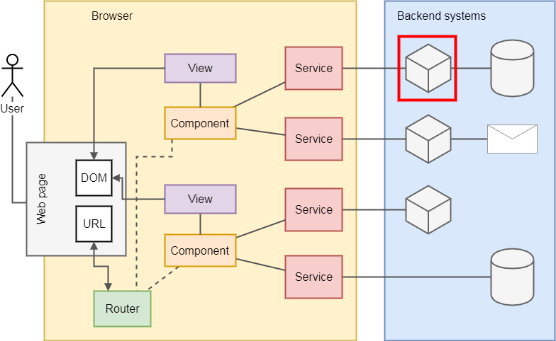
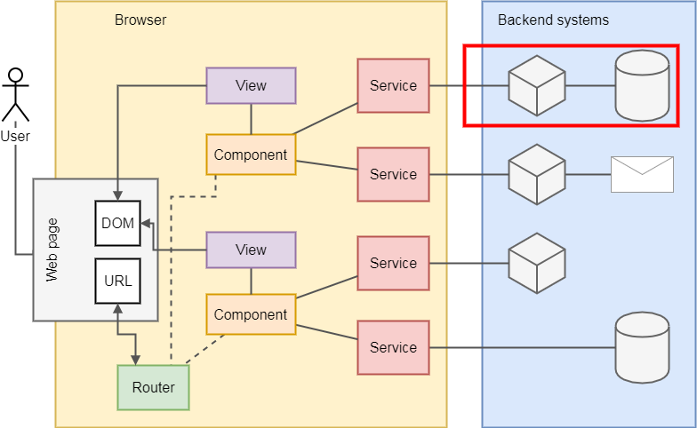
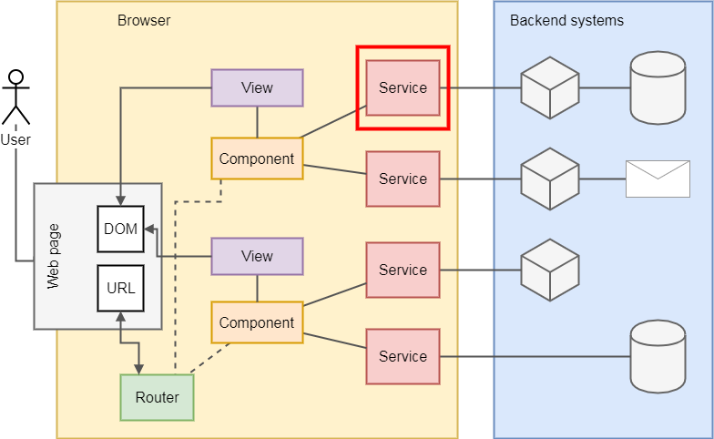
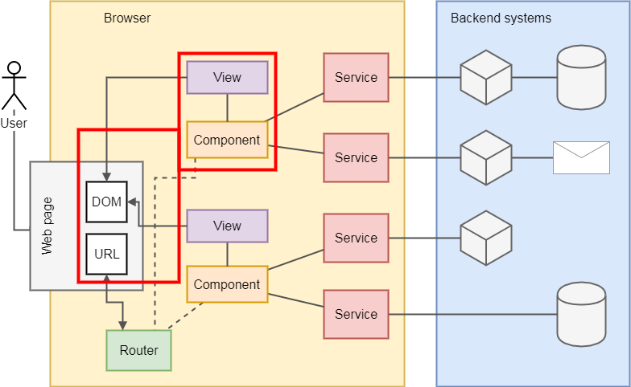
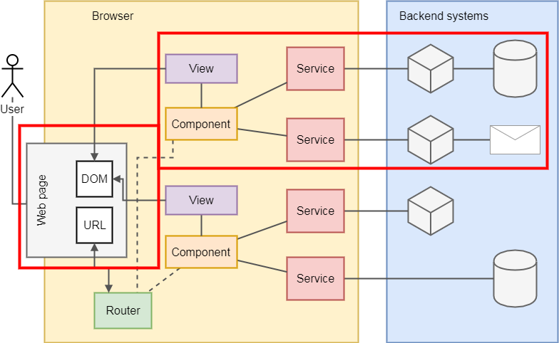
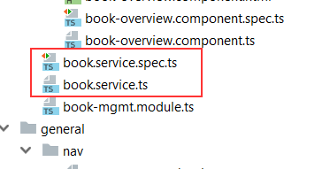
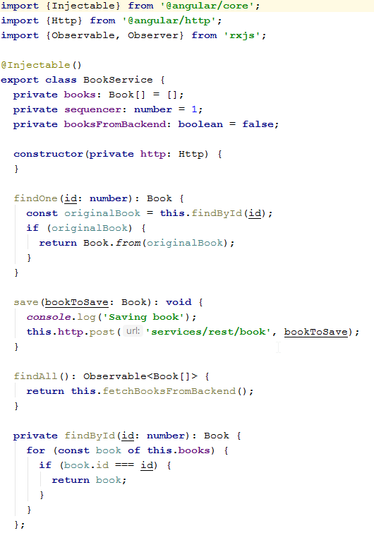
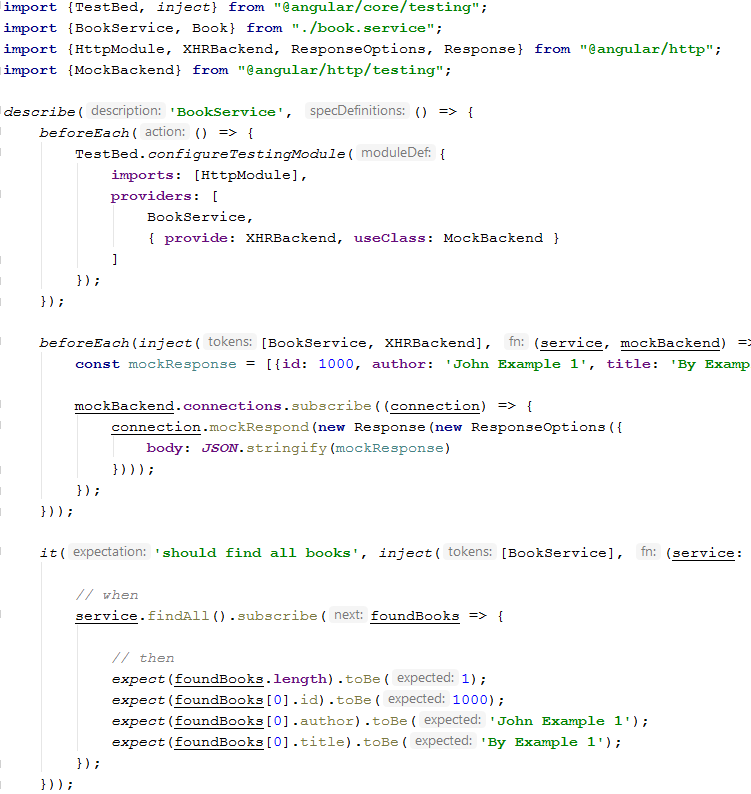
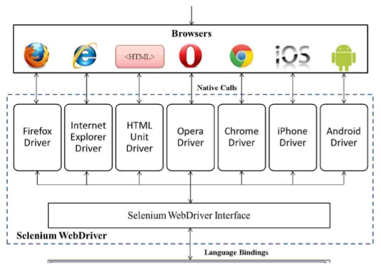
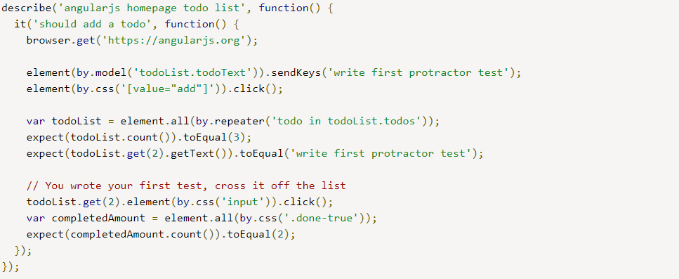

Projekt i implementacja systemów webowych
Testowanie automatyczne aplikacji Angular
Automatyzacja testów
Użycie narzędzi (kod, skrypty, itp) do wykonywania testów oprogramowania i ewentualnego wykrywania odchyleń od założononych wyników.
Po co automatyzujemy testy?
- Powtarzalność
- Szybka informacja zwrotna
- Koszty
Tools don't test. Only people test. Tools only perform actions that "help" people test. - James Bach, http://www.satisfice.com/blog/
Rodzaje testów automatycznych
- Testy jednostkowe (unit tests) - pisane na poziomie jednostki programistycznej (funkcja, procedura, moduł, klasa).
- Testy modułowe/komponentowe - testowanie większych, zintegrowanych konstrukcji.
- Testy integracyjne - testowanie zintegrowanych warstw, komponentów lub systemów.
- Testy E2E - testowanie kompletnej aplikacji.
Testy w aplikacji webowej

Testy jednostkowe backendu
Testy integracyjne backendu
Testy jednostkowe frontendu
Testy komponentowe frontendu
Testy E2E
Testowanie automatyczne frontendu
Jasmine framework testujący kod w JavaScript (ale także Ruby i Python).



Selenium
Testowanie E2E
Protractor - narzędzie do testowania aplikacji Angular z użyciem prawdziwej przeglądarki.
Podsumowanie
- Testy E2E (szczególnie testujące GUI) są bardzo kosztowne.
- Dokładne testowanie całej aplikacji z użyciem E2E jest niepraktyczne.
- Testy niskiego rzędu powinny wykonywać się szybko.
- Uwaga na pułapki "mockowania".